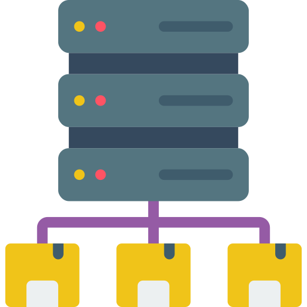

Seleção

1º revolução industrial
O início de toda a indústria. a princípio de tudo a mecanização com o uso das máquinas têxteis na sociedade inglesa do século XVIII e o início da dictomia entre proprietários e proletariado
2º revolução industrial
O inicio do capitalismo monopolista com o fortalecimento das empresas maiores. O começo do uso do ferro e do carvão, e como consequência, a poluição se põe em contexto.

3º revolução industrial
O ponto do culme (até a transição para a indústria 4.0), com o desenvolvimento eletrônico e tecnológico e a automação das indústrias, passando a dispensar de parte da mão de obra na linha de produção.

4º revolução industrial
Dado para alguns especialistas com início em 2010. Representa o uso de termos como "Big Data" e "Internet das coisas" com a premissa de integração de variados serviços.